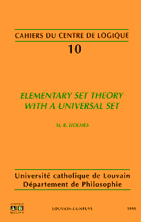

The place to start...
The place to start...
Just so you know who you are really dealing with...
I'm (Melvin) Randall Holmes, a professor of mathematics at Boise State University in Boise Idaho since 1991. My research is in systems of set theory or combinatory logic related to Quine's set theory New Foundations, with a sideline in computer-assisted reasoning. I have a general somewhat more than amateur interest in the history and philosophy of mathematics, particularly mathematical logic.
Here is my very ancient personal data page, which is not very serious and has a lot of broken links because it is ancient and needs to be fixed.
You can see my curriculum vita curriculum vita (with publication list)
Here is the universal set bibliography (an expansion of the bibliography of Forster's NF book). I have an obligation to do some updating here.
Here is a largely outdated blurb about my NF activities, which I preserve for revision.
Here is my old home page for New Foundations, which is referenced here just so I can go in and fix it. It is very old...
Here is my new separate page on the artificial language Loglan.
I have claimed since 2010 to be in possession of a proof of the consistency of Quine's set theory New Foundations. I maintain various versions of this proof here: every now and then I have had to declutter this space. The proof is complex and I freely admit to having severe problems with seeing how to present it.
Different versions of this argument use different notation and terminology. It is at bottom the same argument (even when a model of tangled type theory is the target rather than the construction of s tangled web of cardinals). It is nasty to present and I am always thinking about how I might make it more approachable.
The formal verification of my proof of Con(NF) in Lean has been completed, by Sky Wilshaw, a Part III student at Cambridge who is about to go on to her doctoral studies in Computer Science. Here is a version of the paper proof which is being edited to conform better with the approach that Sky took in the formalization. I have verified the conclusions of the formal argument in Lean: it shows that there is a structure for the language of tangled type theory which satisfies all typed versions of statements in the finite axiomatization of NF due to Hailperin, which entails that it is in fact a model of tangled type theory, and so that New Foundations is consistent. This version of the paper proof is still being edited to conform with the formalization, but a first pass has been completed so I'm ready to display it. The formalized proof is still extremely nasty and complicated; Sky is working on tidying it up, but it resists essential simplification just as all paper versions have. It is, however, reliably correct. There is a lot of work still to be done to clean things up, but success in proving this theorem can be reported.
Here is a version which is in general terms similar to the one below (a tangled type theory construction) but involves a systematic technical change which seems to simplify matters considerably. The new technical concepts grew out of the Lean development (the change to the domains of f maps is due to a suggestion by Sky Wilshaw, the current Lean worker) but the Lean project is still driven by the version below. (initially posted 11/17/2023), will be under revision).
Here is the version of the proof (a tangled type theory approach, the description in the Wisconsin slides, probably best yet) being used to attempt verification of the proof in Lean. This version is intended to replace the one below, but it involves considerable changes and the old version may be needed for debugging and reconciliation. The datestamp on the paper should be consulted: this one will continue to be updated regularly (August 9 2022 initial release). On 11/17/2023 I am posting a version of this which is rather sketchy, as the previous posted version contained a serious gap. The gap is fixed in this version but the fix is rather messy; the situation is clearer in the version above [the problem was with the articulation of the argument for the size of types]. The gap was probably introduced when this version was created initially; I suspect that I oversimplified something in translation from the previous version.
It may interest readers to know that the construction has been formalized, and the verification of its properties has been verified up to completion of the proof of the Freedom of Action theorem. We are still at work on the proof of the sizes of types.
Here is a now probably superseded version of the proof (a tangled type theory approach, the description in the Wisconsin slides, probably best yet) being used to attempt verification of the proof in Lean. The version above repairs an error and systematically changes the framework. The datestamp on the paper should be consulted: this one will be updated regularly during my Cambridge visit in May/June 2022 (writing in May 2022).
Here are the slides for the talk given on Zoom at the University of Wisconsin, 4/25/2022.
The following is the last full version of the tangled webs approach, which I preserve for reference. I now think that building a model of tangled type theory is much more manageable.
Here is a fresh version from April 2020. I am hoping this will be a bit easier to follow than earlier versions; I do some clearly indicated foreshadowing of impossible things that turn out to be all true in the end, which might help with motivation when I am doing the honest construction.
I am for the moment, in the interests of focus, making other older versions invisible.
If you have an amateur philosophical interest in NF, I do not think it likely that you will get anything out of these very technical and not yet very polished documents (in any version), and I am not likely to answer your questions about them. Be advised that in my opinion (which I know is not universal) the famed NF consistency problem has nothing at all to do with philosophical issues which Quine's set theory might be taken to address: I think that NFU addresses these issues to exactly the same extent and its consistency and mathematical strength have been settled issues since 1969.
Here is the talk I gave on New Foundations to the department at Boise State on September 10, 2013. Philosophical interests in NF might be served by these slides, and also by the notes on Frege's logic which appear below.
This is my most recent explicitly philosophical essay about Quine-style set theory.
I have removed a lot of links to various drafts in constructing the new page. Such drafts still exist on my university computer but are not present here. You may inquire about them if necessary.
 Look Mom, I wrote a book! (jumps up and down)
I have permission from my publisher to post a revised version of my book Elementary Set Theory with a Universal Set (which has gone out of print) online. This PDF version is the result of a first pass through the text in November 2012 with the aim of preparing an official online second edition. I thank my publishers for their kindness in allowing me to maintain an online version, both to conveniently publicize error corrections and to make the work available now that it is out of print.
Communications about errors and infelicities would be very welcome!
Here are some notes on TSTU presented as an unsorted set theory, developing some thoughts of Thomas Forster.
Here are some notes on category theory in NF, a current preoccupation of mine. Here is another draft on the same subject.
Here is a talk I gave recently to the local seminar on resolving the paradoxes in NFU. There isn't anything very novel about it: it was really intended as an example to address questions by a philosopher about whether discussions of avoidance of the paradoxes are explanations of why we regard a theory as reliable (the usual way in which resolutions of the paradoxes in NFU are discussed is not really motivated in this way). Here are some notes about foundations in type theory and NF(U) which are altogether more serious in intent, although they should be regarded as a negative indexed draft which might contain genuine howlers ;-)
Here is the brief demonstration that parameter-free Zermelo set theory is the same as full Zermelo set theory: parameterfree.pdf
Here is my submitted draft (2018) on representation of functions in third order logic (this paper has appeared). Here are the slides for my BEST talk about this.
Here find an outline of a proposed approach to semantics for the Principia Mathematica (PM) of Russell and Whitehead using the type and substitution algorithms in my paper on automated polymorphic type inference in PM. Here find some notes on PM with page references related to the same analysis.
Here find an essay on the ontological commitments of PM and why substitutional quantification does work there and doesn't save you from serious ontological commitments. The flavor of my remarks is admittedly rather bad-tempered; a great deal of nonsense is written about PM.
Here find another tidbit about PM. The system without the axiom of reducibility (ramified type theory) is known to be quite weak; here we discuss the fact that it is essentially equivalent to the predicative version of the simply typed theory of set, a MUCH simpler system. I'm still working on this, but enough of it is fleshed out to post this here. An odd assertion which comes out is that the axiom of reducibility in PM turns out to be exactly equivalent to the axiom of set union in the typed theory of sets, which is entirely not obvious.
Here find an outline of how to fix the foundational system of Frege using stratification in the style of Quine. Here find another approach to the same subject. Here find a computer implementation of these ideas.
Here find my current notes on Dana Scott's lovely and weird result that ZFC minus extensionality has the same strength as Zermelo set theory.
Here is the May 19th 2011 (submitted) version of the paper I am writing about Zuhair al-Johar's proposal of "acyclic comprehension", with Zuhair and Nathan Bowler as co-authors, a perhaps surprising reformulation of stratified comprehension.
Here is the submitted (2020) draft of the paper I am writing about a simpler form of symmetric comprehension equivalent to NF. Here is a companion piece describing a weaker version of symmetric comprehension which gives a theory inessentially stronger than NF3, with a model construction.
Here find the note submitted Dec 30 2013 on my result that the set H(|X|) of all sets hereditarily smaller in size than a set X exists, not using Choice. It is surprising to me that this is not an obvious result, but the references for partial results that I have been able to find are recent, so perhaps it is new.
Here find a summary of my thoughts on the correct default foundations in the style of Zermelo. In spite of being an NF-iste, I do think that Zermelo-style foundations are the best. However, I think that the axiom of replacement is so strong that it should not be part of the default foundations. In particular, I do not think that the axiom of replacement is justified by the intuition of the cumulative hierarchy; it is a far stronger principle.
Here is a version of my paper on the curious fact that the urelements in the usual models of NFU turn out to be inhomogeous, because the membership relation on the underlying model-with-automorphism of the usual set theory turns out to be definable in NFU terms. This version corrects a couple of annoying typos in the published version.
I should put a link to my SEP article on Alternative Axiomatic Set Theories here.
Here are the slides for a talk I gave for students at the College of Idaho, which includes a cleverly minimalist representation of the reals.
Here are my notes on efficient bracket abstraction. Here is a brief related note on eliminating bound variables from syntax.
Here is a very old note on Quine's calculus of concepts which perhaps should be dusted off. Here is another
Here is a note on defining equality as indiscernibility in NF and related theories.
Here is a letter of mine discussing the set theory of Ackermann. Here are some not very serious notes on a pocket set theory. Here is a later version (PDF file).
The place to start...
For several years, I have been the "chief executive officer" (a grander designation than is perhaps appropriate) of The Loglan Institute, the nonprofit organization which attempts to guide the development of the artificial language Loglan. This language was originally proposed by James Cooke Brown in the 1950's as a vehicle for testing the Sapir-Whorf hypothesis (look it up!) A specific peculiarity of this language is that it is (at least in intention) syntactically unambiguous: the official version of the language is unambiguously machine parsable. The language is intended to be highly logical: it is to some extent an implementation of first-order logic in a spoken language.
Here is the official web site of the Loglan Institute. Here is the mirror of the Loglan web site at Boise State. There is access to a wide variety of information, documents and software through these links.
Here is my new separate page on Loglan, where you can find pointers to my current Loglan projects.